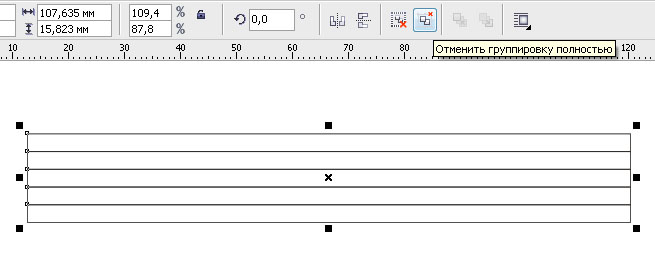
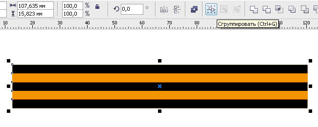

Кисть — Георгиевская лента!!!
sergey / 08.05.2011, 05:11/00:41
Форум:
Это уже много обсуждалось...
К примеру http://cdrpro.ru/forum/5-546-1
Но думаю, будет не лишним для новичков.
Кисть — Георгиевская лента.
Рисуем фрагмент ленты, используя инструмент Разлинованная бумага
Разгруппировываем

Окрашываем соответственно и сгруппировываем

В режиме Художественное оформление — Кисть — сохраняем полученный фрагмент
Ну а делее или рисуем отруки, или применяем к пути (контур, линия).
Далее нарисованное можно отредактировать в режиме Форма.
P.S. Единственные недостатки:
• надо сглаживать углы
• ширина ленты везде одинакова.
За-то быстро!
И вобщем-то урок не о ленте, а о создании кисти!
Всем творческих успехов!